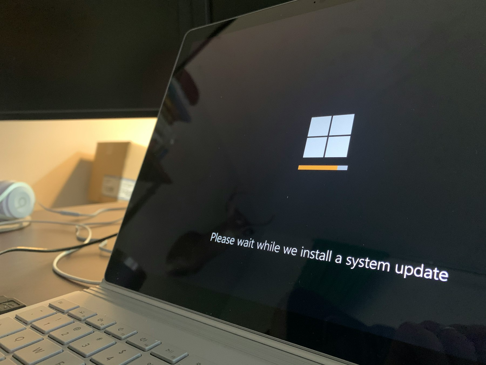

TL;DR
Choose HubSpot CRM for starters due to its free tier and simplicity. Upgrade to tools like Zoho CRM when managing 20+ clients. Watch for hidden costs if opting for premium features, and match your choice to your client count and specific needs.
Quick Verdict

When selecting beginner-friendly CRM software, prioritize tools like HubSpot CRM and Zoho CRM, which allow up to 10 users for free. These platforms streamline client management with vital features such as easy navigation, automation capabilities, and integration options. The right choice can save you valuable time, ensuring you're not overwhelmed.
Who Should Stay Free and Who Should Upgrade
Freelancers and small businesses with fewer than 10 clients often find that free CRM options, such as HubSpot CRM, meet their needs effectively. These tools provide essential functionalities like contact management and basic reporting without the financial commitment.
For instance, a freelance graphic designer managing a handful of clients can easily track project deadlines and communications with a free CRM, keeping everything organized and accessible.
However, if your business starts to scale—like a digital marketing freelancer who adds 5-10 new clients each month—you may quickly outgrow these free options. In this scenario, upgrading to a paid tier, such as Zoho CRM at about $23 per month, becomes essential to leverage advanced features.
These may include enhanced reporting capabilities, customizable workflows, and automated follow-ups, which can significantly improve client interactions and project management.
Consider a case where a digital marketing freelancer previously managed clients using a free CRM but found it increasingly challenging to generate performance reports or track complex campaigns. With the basic tools, they spent hours manually compiling data from various platforms, ultimately costing them time and potential revenue.
Where Premium Starts Paying for Itself
The ideal moment to upgrade your CRM software typically arises when you reach around 20 clients or when the need for automated workflows becomes clear. At this stage, tools like Salesforce, which starts at approximately $25 per user per month, can significantly enhance your operational efficiency.
For instance, with automation features, you can streamline repetitive tasks like follow-up emails and appointment scheduling. Imagine saving an average of 3 hours per week that you previously spent on manual outreach.
This time savings can translate to roughly 12 to 15 additional client interactions each month, potentially boosting revenue by 20% if you close just a couple of those new opportunities.
Using a basic, entry-level CRM, however, could trap you in a cycle of tedious manual processes. Picture a scenario where you're juggling multiple client interactions but lacking automated reminders to follow up.
After a few weeks, a few of those leads may slip through the cracks, resulting in missed opportunities—each averaging $1,000 in potential sales. Over the course of a year, these missed chances can add up to significant losses, potentially costing you over $10,000.
Additionally, even minor mistakes due to manual entry can lead to confusion that frustrates clients, eroding trust and engagement.
A Real Setup or Switching Scenario
Imagine Jane, a small business owner transitioning from a simple spreadsheet to a more sophisticated CRM solution. Initially, Jane starts with HubSpot, renowned for its user-friendly, drag-and-drop interface, which allows her to set up basic functionalities in under a week.
By integrating HubSpot with Mailchimp for email marketing and Google Workspace for document management, Jane creates an all-in-one workspace that enhances her operational efficiency.
Within just a few days, she can manage initial contacts, track conversations, and streamline her project management processes.
However, as her business grows, Jane recognizes the limitations of HubSpot for her evolving needs—she can't efficiently manage a burgeoning sales pipeline or analyze detailed customer data.
After six months, she decides to switch to Pipedrive, which offers a more robust feature set tailored for sales pipelines. But this transition isn't without challenges. Jane has to take a week to adjust her workflows and train her team on the new system, and during this period, there's a risk of miscommunication that could jeopardize client relationships.
Realistically, she estimates that Pipedrive will cost her about $12 per user per month, versus HubSpot's free tier. While the switch can enhance her ability to forecast sales accurately, she must weigh the tradeoff of spending more upfront for the tools she needs to scale effectively.
Mistakes, Hidden Costs, and Overkill Choices
Many beginners underestimate hidden costs associated with complex CRMs, which frequently include extra charges for essential features like reporting, customer segmentation, or integration with other tools.
For instance, platforms like Salesforce, while powerful, often add fees that can easily inflate your monthly bill. A basic package can start at $25 per user, but many users find that add-ons for automating marketing campaigns or advanced analytics push their total to well over $100 per user monthly.
This can lead to costs spiraling into the hundreds or even thousands for small teams, making it financially strenuous.
Conversely, solutions like Freshsales offer robust features for around $15 per user per month, allowing users to access key capabilities without falling prey to overpayment. They provide built-in analytics, lead scoring, and email tracking at a fraction of the cost, making them incredibly beginner-friendly.
A common mistake is choosing high-end tools without fully assessing your requirements, which may result in paying for functionalities you don't use. For example, a small startup that only needs basic contact management might find themselves with an advanced CRM that offers enterprise-level features, leading to frustration and wasted resources.
Take, for instance, a marketing agency looking for CRM software. They begin with HubSpot, which might offer a free tier, but as they scale and utilize more features, they could transition into a plan charging $800 monthly just for their growing team.
Best Pick by User Type
For independent freelancers, HubSpot CRM remains the best choice due to its ease of use and robust feature set, particularly if finances are tight. Meanwhile, freelancers in creative fields who handle 10+ clients should consider Zoho CRM for $12/month, gaining tools for project tracking and client management.
For those running agencies, a more complex tool like Salesforce becomes ideal, offering enhanced reporting and forecasting features critical for scaling.
FAQ
What features should I look for in a beginner CRM?
Key features include ease of use, automation, integrations with other tools, and scalability options.
Is it worth investing in a paid CRM as a freelancer?
Yes, especially if you're managing many clients; paid options often provide essential tools that save time and improve client interactions.
How can I determine if a CRM is beginner-friendly?
Look for intuitive interfaces, comprehensive customer support, and resources for onboarding.
This article has been reviewed for practical usefulness and updated when information changes.
Choose faster
Use this article to narrow the field then compare your top options by price, setup friction, and upgrade risk.
Search more articles
Find related tools, workflows, and guides.
Photo credits
- Photo 1: Clint Patterson via Unsplash
- Photo 2: Bernd 📷 Dittrich via Unsplash
- Photo 3: www.kaboompics.com via Pexels
- Photo 4: Nataliya Vaitkevich via Pexels
- Photo 5: Yan Krukau via Pexels